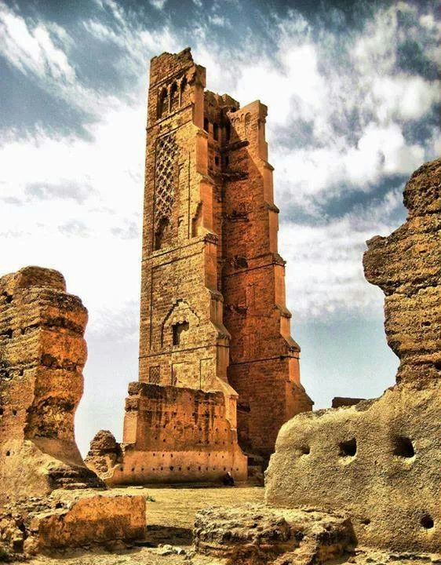
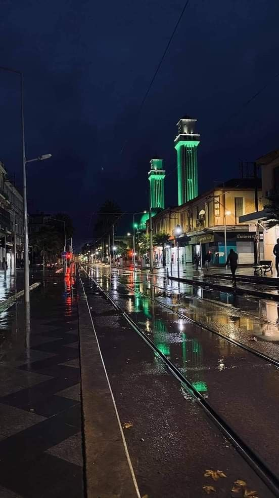

La ville d'Oran est réputée pour son climat agréable, avec des étés chauds et des hivers doux. Son emplacement en bord de mer lui confère également de magnifiques plages, telles que les plages d'Aïn El Turck et de Madagh, qui attirent de nombreux visiteurs. Oran est une ville dynamique et animée, offrant une multitude d'activités et de sites à explorer. Son centre-ville, avec ses rues animées, ses marchés colorés et ses cafés traditionnels, dégage une atmosphère vibrante et conviviale. La place du 1er Novembre, située au cœur de la ville, est un point de rencontre populaire pour les habitants et les touristes.
Tlemcen a une longue histoire qui remonte à l'époque berbère. Elle a été successivement occupée par les Romains, les Vandales, les Arabes et les Ottomans, ce qui a laissé une empreinte variée sur la ville. Au fil des siècles, Tlemcen est devenue un important centre culturel, artistique et intellectuel de la région. En tant que destination touristique, Tlemcen offre également de beaux paysages naturels, notamment les montagnes du Rif et les gorges de Chetouane. Elle est connue pour son artisanat traditionnel, en particulier la production de tapis berbères. Les tapis de Tlemcen sont réputés pour leur qualité et leurs motifs distinctifs, qui reflètent l'héritage culturel de la région.
La ville est connue pour sa beauté naturelle et ses plages magnifiques. Mostaganem possède également un riche héritage historique et culturel. La ville abrite plusieurs monuments et sites historiques, tels que la Grande Mosquée, datant du 17e siècle. Elle est également connue pour ses festivals et événements culturels. Le Festival international du théâtre de Mostaganem est l'un des événements les plus importants de la région, attirant des artistes et des amateurs de théâtre du monde entier.
La ville est nichée au pied des montagnes de l'Atlas et bénéficie d'un paysage naturel spectaculaire. Elle est entourée de collines et de vallées verdoyantes, offrant ainsi de superbes panoramas. Sidi Bel Abbès est également traversée par l'oued Mekerra, un cours d'eau qui ajoute à la beauté de la région. On y trouve de nombreux bâtiments coloniaux français datant de l'époque de la colonisation. L'un des sites les plus emblématiques de la ville est la Place Carnot, une place centrale où se trouvent la mairie et d'autres édifices importants.
